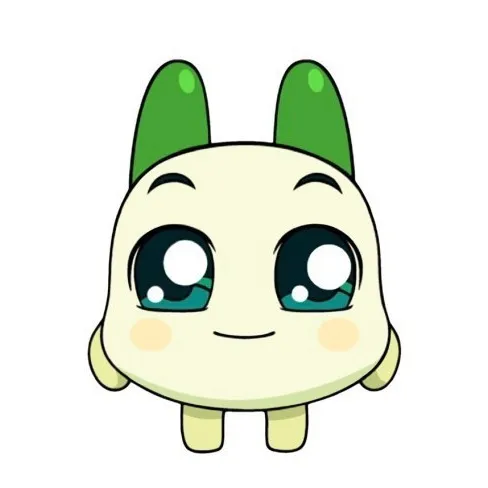
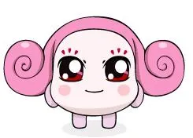
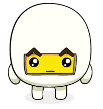

양파쿵야

"이름! 양파쿵야! 호기심 많고 낙천적인 레스토랑의 사고뭉치!"
최근 게시물
- 주먹밥, 너 정말 떠날 거냐?!
- 제일 잘하는 요리는 김장김치라구!
- 무지개 떡 먹고 싶다
More Information...
- 2003년 넷마블 게임 야채부락리에서 첫 등장한 양파쿵야는 쿵야 레스토랑에서 일하는 요리사 대표로, 보라빛 양배추를 모티브로 디자인되었다. 호기심 많고 낙천적인 성격에 사고뭉치 캐릭터성이 더해져 작중에서 크게 활약한다. 개그 캐릭터로 자리매김했지만 동료들 말에 따르면 이 작품의 실질적인 주인공이라고 한다. 친구들이 떠나려 할 때마다 회유와 협박을 동원해서라도 붙잡으려는 모습에서 깊은 동료애가 느껴지는 캐릭터다. 넷마블의 마케팅 자회사 엠엔비는 지난해 4월 쿵야 IP를 활용해 새 콘텐츠 브랜드인 쿵야 레스토랑즈를 새로 선보였다. 주방장 캐릭터인 ‘양파쿵야’가 불의의 사고로 냉장고에 갇혔다가 깨어나 레스토랑을 재건한다는 이야기로 부활의 명분을 만들었다. 양파쿵야가 무성의한 말투로 직장 생활의 고단함을 토로하는 모습은 인터넷 밈으로 재생산되기도 했다.
프로필
| 이름 | 양파쿵야 Onion Koongya |
| 유형 | 비인간형 (채소) |
| 소속 | 쿵야 레스토랑 요리사 대표 |
| 성격 | 호기심 많고 낙천적, 동료애 깊은 사고뭉치 |
| 특기 | 얼굴 표정으로 웃기기, 미칠 듯한 언변, 각종 패러디 |
| 잘하는 요리 | 김장김치 |
| 좋아하는 것 | 무지개 떡 |
| 단점 | 요리를 정말 못하는데 본인은 프로급이라고 자칭함, 잘못해도 반성 안 함 |
| 장점 | 엄청난 낙천주의자, 친구를 절대 포기하지 않는 동료애 |
내 정보
About me:
밝고 쾌활한 양파 쿵야는 남에게 인정받는데 집착해요. 이는 어린 시절, 다른 논발에서 자란 트라우마 때문인데요. 솔직하고 매력 넘치는 까도남이지만, 의외로 비밀이 많아보이네요!
방명록
 쿵야 |
2003-05-12
이름, 주먹밥쿵야! 양파쿵야를 사부로 모시고 일하는 착하고 성실한 막내!
→ 무척 순수하고 천진난만. 집 밖에 나가는 걸 기본적으로 좋아하지 않음 |
|
 쿵야 |
2004-01-20
이름~ 샐러리쿵야! 우아하게 살고 싶지만 되는 게 없는 레스토랑의 매니저! → 쿵야 레스토랑의 매니저 및 총책임자. 전체적으로 드세고 화를 잘 내는 성격이다. |
|
 |
2004-06-08
이름~ 완계쿵야! 배달 나가면 돌아올 줄 모르는 레스토랑의 터프한 철가방 → 초기의 쿵야 레스토랑 운영 멤버. 통찰력과 분위기 파악에 뛰어나지만 표현이 서툴러 아무도 눈치를 채지 못한다. |
| 호박쿵야 |
2005-03-02
이름~ 호박쿵야! 정직함과 성실성으로 레스토랑의 궂은일을 맡아 하는 살림꾼! → 쿵야 레스토랑의 웨이터. 쿵야 캐치마인드의 기본 쿵야 |